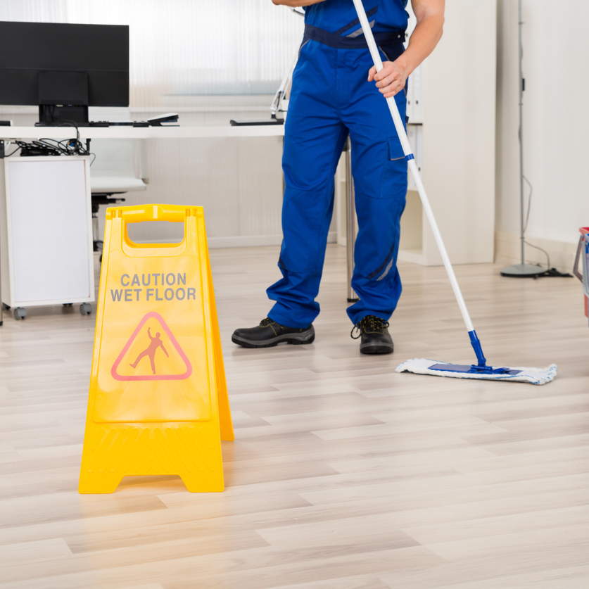

.png)

A & T Eco Services offers professional reliable versitile professional cleaning service in Uusimaa.
We carry out a wide range of cleaning services from building cleaning to maintenance conservation. We tailor our customers' needs suitable cleaning smoothly, so please feel free to contact us for a quote!
Cleaning Services
Our professional staff make efficient cleaning of the subject of high cleaning, and the result is gleaming clean.
stair cleanping
We handle stairs and ripples, including waxes on the site.
It is advisable to leave the window cleaning professionally and save yourself time and effort. We wash the windows of the detached houses, terraced houses and other objects to be sparkling!
Special cleanersWe do a lot of special cleaning according to your needs, so please contact us and let us know what you would not miss.
Professional cleaning services for office and busines.
Cleaning can be a job and we know that you have a lot of choices when you consider renting a cleaning service. That is why we are continually developing to improve the already high standards so that you are absolutely the best in the industry. It's not enough to trust the cleansing crew. You also have to be confident that they will perform a first class cleaning job. Our employees with rigorous training will ensure that every member of our cleaning team understands their role and how they relate to the team's overall performance.
Spring cleaning cleans the floor from the floor
In mains cleaning, the item is literally cleaned from floor to ceiling. Our basic washings and waxes on the floor, cleanings on walls and other surfaces, and thorough cleaning of tops, are ours. We do great examinations for housing companies, health facilities, business premise or schools. Our service is a customer-oriented cleaning company that is accurately and flexibly caretaking in the area of the metropolitan area.
Spring cleaning includes:
- Cabinet door cleaning
- Floor waxes, top dust cleaning, wall cleaning
- Wet and wet wiping of floor and flooring list
- Wiping dust, including high dust clouds and other difficult places
- Wiping of light switches and socket outlets
- Wiping of radiators
- Wiping of ventilation valves
- Polishing of glass surfaces and mirrors
- Other cleaning work according to customer's wishes.
Building Cleaning
Restaurant Cleaning
We handle restaurant cleaining comprehensively and according to customer needs.
Building Cleaning
Building cleaning is part of clean construction.
Office Cleaning
We offer maintenance cleaning to companies. We like the cleanliness concerns sites in accordance with the customer's wishes.
Final cleaning and building cleaning
Improper cleaning will also expose the other employees to the dust in addition to the cleaning worker.
Professional cleaning services for office and business
Cleaning can be a job and we know that you have a lot of choices when you consider renting a cleaning service. That is why we are continually developing to improve the already high standards so that you are absolutely the best in the industry. It's not enough to trust the cleansing crew. You also have to be confident that they will perform a first class cleaning job. Our employees with rigorous training will ensure that every member of our cleaning team understands their role and how they relate to the team's overall performance.
Office Cleaning
We offer maintenance cleaning to companies. We like the cleanliness concerns sites in accordance with the customer's wishes.
Maintenance cleaning is a regular daily or weekly cleaning, which aims to maintain the level of cleanliness in the room. Maintenance grit removes stain and stains.
We provide regular cleaning services for business customers, business premises, industry and housing companies with over-the-counter cleaning and basic cleaning.
Monthly billing based maintenance cleaning is based on service description. We will do our service description together with your needs.
The cleaning program defines the maintenance cleaning frequency and whether the work is done by hand or machine methods. Maintenance cleaning can also include intermediate and check-offs as well as intermittent jobs such as washing the floor with a combination machine or wiping upper wipers.
The cleaning service can be flexibly supplemented, for example, by means of exchange and sanitary supplies or by an additional service provided with the customer.
For us, occupational safety is paramount - we always find ourselves in the right equipment. Request a quote today!
The cleaning service always has to compete, it does not cost anything.